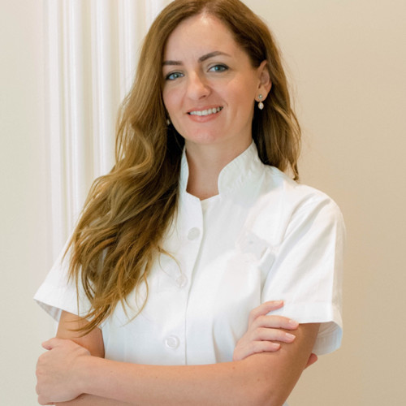

Milica Andelković je visoko kvalifikovani fizioterapeut sa više od decenije iskustva u
ovoj oblasti. Odrasla je u Pirotu, a diplomirala je 2009. godine na Visokoj
zdravstvenoj školi strukovnih studija u Zemunu, smer strukovni fizioterapeut.
Narednih pet godina radila je u oblasti rane rehabilitacije u državnim ustanovama
poput Dr Dragiše Mišovića i Kliničkog centra Srbije. 2014. godine se preselila u
Dubai, Ujedinjeni Arapski Emirati, gde je nastavila da usavršava svoje veštine radeći
sa pacijentima koji pate od disfunkcije mišićno-koštanog sistema.
Kroz godine, Milica je nastavila da se usavršava kroz dalje obrazovanje i treninge
kako bi ostala u korak sa najnovijim saznanjima u svojoj oblasti. Tako je 2015.
godine stekla sertifikat iz tehnike suve punkcije(Deep dry needling), a 2017. putuje u
Njujork, SAD, da bi se obrazovala iz oblasti neuro-kinetičke terapije (NKT)
2018. godine, Milica razvija interesovanje za zdravlje žena i disfunkcije
karličnog dna, što je dovelo do sticanja sertifikata o proceni i lečenju karličnog
dna i inkontinencije. Dodatno je proširila svoje znanje o karličnom zdravlju
sticanjem sertifikata od američkog instituta Herman & Wallace 2020. godine.
Milica se 2021. godine vratila u Beograd, gde sada pomaže pacijentima sa
disfunkcijom karličnog dna i drugim mišićno-skeletnim problemima. Van posla, uživa
u provođenju vremena sa suprugom i trogodišnjim sinom u prirodi.
Milicina posvecenost stalnom obrazovanju i strasti za pomaganje pacijentima u
poboljšanju kvaliteta života.